This guide describes only the setup and basic operation of the software development environment, but it does not fully describe the MSPM0 microcontrollers or the complete development software and hardware systems. For details of these items, see the appropriate TI and CCS documents listed in section Related Documentation From Texas Instruments.
Caution - This is an example of a caution statement. A caution statement describes a situation that could potentially damage your software or equipment.
The E2E Community Support Forums for MSPM0 MCUs are available to provide open interaction with peer engineers, TI engineers, and other experts. Additional device-specific information can be found on the MSPM0 website.
Code Composer Studio (CCS) is an integrated development environment (IDE) that supports TI’s Microcontroller and Embedded Processors portfolio. CCS comprises a suite of tools used to develop and debug embedded applications.
This guide only explains some features and capabilities of the CCS IDE using MSPM0.
More documentation for CCS is available at TI.com or in the Help menu included in the IDE.
Note: Creating a project from scratch is not recommended since creating the project from scratch doesn’t add all of the necessary device support files by default. To start from a blank project, TI recommends importing the Empty Driverlib example project from the SDK.
TI Resource Explorer (TI-Rex) helps you find all the latest examples, libraries, demo applications, datasheets, and more for your chosen platform.
This tool is available at https://dev.ti.com/tirex, but it’s also integrated into CCS allowing for a more integrated user experience.
Select Help → Getting Started.
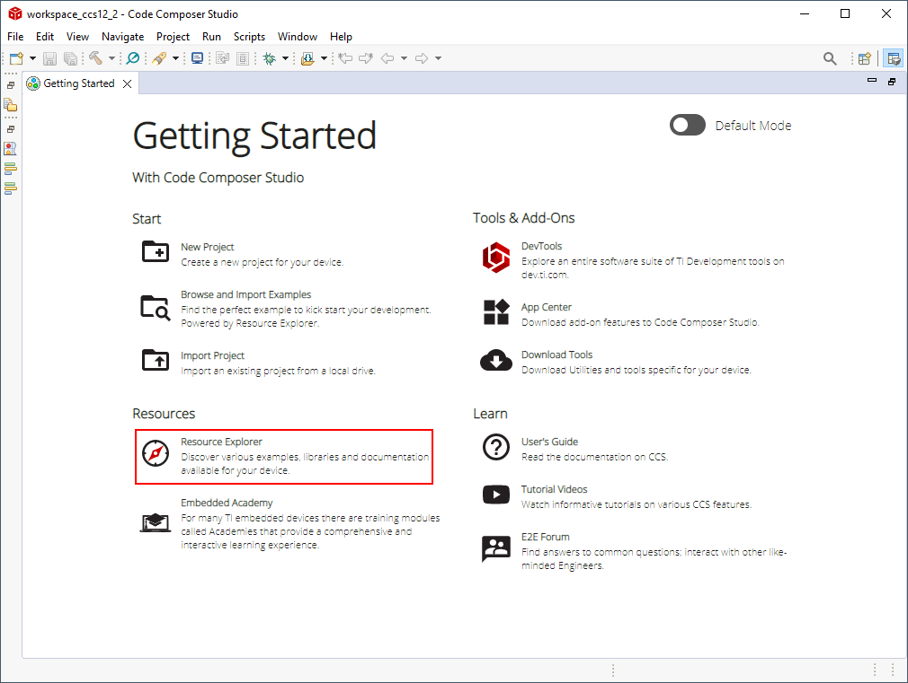
Click on Resource Explorer
The navigation panel can be used to view different TI products, documentation, software, etc.
TI Resource Explorer also allows to select a specific SDK version by clicking next to a product and selecting Manage Versions. Note that installed products are also shown with a green check mark.
Use the integrated search to filter by LaunchPad (i.e. LP-MSPM0L) device (i.e. MSPM0L), middleware (i.e. DriverLib), or solution (i.e. LIN). Note that TI-Rex will automatically detect a connected LaunchPad.
Selecting an example will show a useful Readme document with a description of the example, peripheral and pin usage and how to run it.
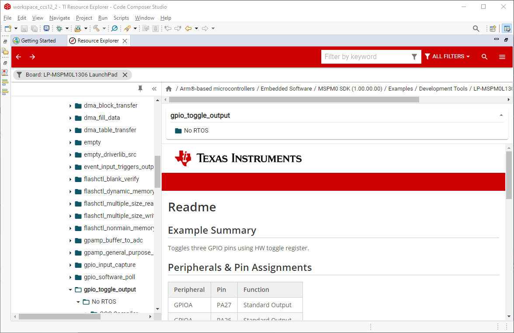
Select a CCS project for the example and click on Import to add it to your workspace.
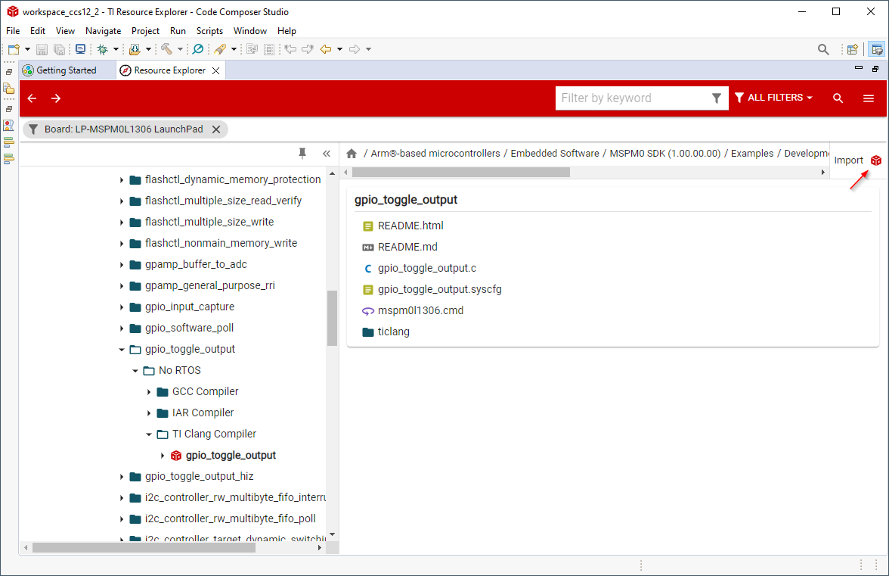
Note that CCS will automatically detect any dependencies, including SDKs and compilers, and it will request installation if needed.
Some examples in the MSPM0 SDK have SysConfig support. SysConfig is an intuitive and comprehensive collection of graphical utilities for configuring pins, peripherals, radios, subsystems, and other components. SysConfig helps you manage, expose, and resolve conflicts visually so that you have more time to create differentiated applications.
The SysConfig tool is delivered as a standalone installer, it can be used on the cloud at dev.ti.com, or it’s integrated into CCS for better and easier experience.
After importing a MSPM0 project in CCS, simply double-click the .syscfg file and this will open SysConfig.
In order to migrate a project configuration to a new MSPM0 derivative (such as a new board, device, or package), the MSPM0 SDK supports several project migration processes. Project migration in this scope means updating relevant project configuration files and settings that are specific to the derivative, including linker files, startup files, and included libraries. The available options for migration depend on the project configuration, and the user should consult the desired project’s README for more information on which approach is supported. An overview of the available migration options and when they can be used are given below: - SysConfig Project Migration: This is the default approach for SysConfig compatible projects, in which all the configuration files can be handled by SysConfig. - Non-SysConfig Compatible Project Migration: This is the default approach for non-SysConfig compatible
projects, where all the configuration files can be handled by the built-in device support package - Manual Migration: For all other cases that require custom projectspecs or other incompatible configurations, the user can follow these steps for manual migration.
In order to facilitate project migration, SysConfig will generate Project Configuration files by default, which can be controlled through the Project Configuration module. The steps below apply to TI Arm Clang and Arm GCC.
In SysConfig, enable the Device View and click on SWITCH
Select the New Values for the Device, Package, and CCS Launch Device to migrate the project configuration to, and then click CONFIRM.
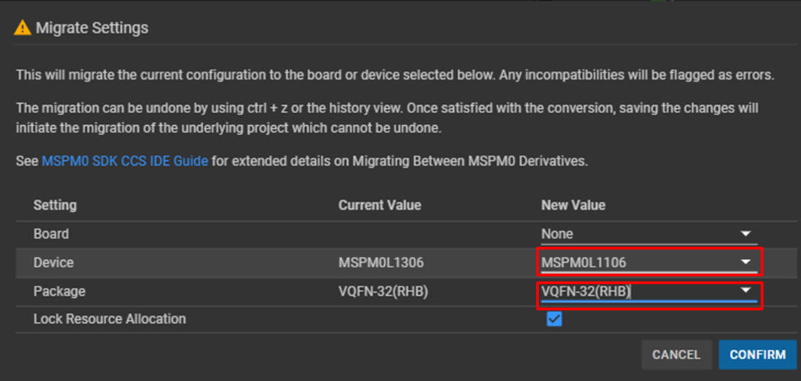
After Confirming the new device values, SysConfig will highlight an error on the Project Configuration module. The user must choose the new device in the Select Device options. Make sure the device selection matches what was chosen for CCS Launch Device in the previous step.
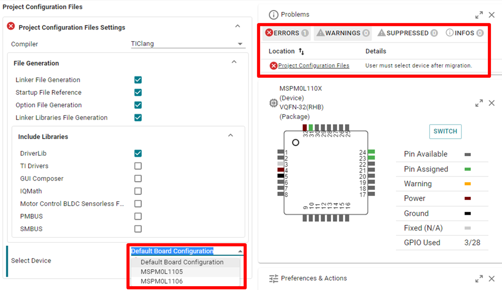
Note that SysConfig will highlight any conflicts with the migration, such as unavailable pins and peripherals. Fix any conflicts as needed, and save all the changes to the SysConfig configuration script.
CCS will automatically migrate the device variant and will add a corresponding .ccxml file. SysConfig will update the relevant project configuration files, including linker and startup files.
Migration is now complete and the user can build their project for the new target device.
Note: If the user wants to manually modify any Project Configuration files, they should disable the option to generate that file from the Project Configuration module and then manually add their desired file to the project. Otherwise, changes that are made to any generated file will be overwritten by SysConfig when the project is built. Keep in mind that the steps above are intended to be followed when all the project configuration files are handled by SysConfig.
For non-SysConfig compatible projects, migration is handled seamlessly by the built-in device support package.
In CCS, open the example project Properties and choose a different MSPM0 device.
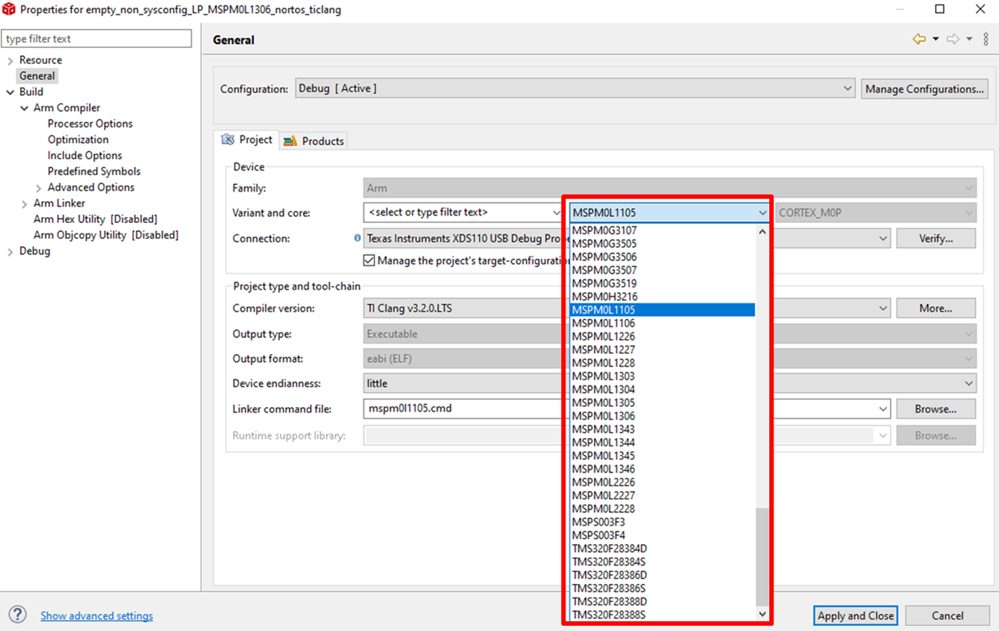
Hitting Apply and Close will automatically make the following updates to the project, corresponding to the newly selected device:
Include a new CMSIS startup file
Include a new linker command file
Switch the device Predefine Symbol in the project compiler settings
Switch the linked DriverLib library in the project linker settings
Important Note: The CMSIS startup file and linker command file from the previous device are NOT removed. Instead they are simply excluded from the project build.
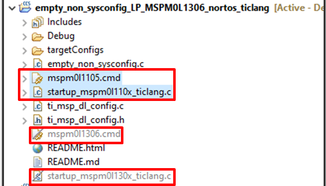
Migration is now complete and the user can build their project for the new target device.
SysConfig allows for an easier migration between MSPM0 derivatives; however for some projects manual modifications are required. The steps below apply to TI Arm Clang but similar steps apply to Arm GCC.
Note: Steps 1-3 don’t apply when not using SysConfig, and step 4 needs to be done manually.
In SysConfig, enable the Device View and click on SWITCH
Select the corresponding options for the new MSPM0 device and click CONFIRM.
Note that SysConfig will highlight any conflicts with the migration, such as unavailable pins and peripherals. Fix any conflicts as needed.
CCS will automatically migrate the device variant and will add a corresponding .ccxml file.
In the project properties, select Build → Arm Compiler → Predefined Symbols. Select the device definition and update it.
Update the linker and startup files. The MSPM0 SDK includes default files for all MSPM0 derivatives at <sdk>\source\ti\devices\msp\m0p\linker_files\ticlang and <sdk>\source\ti\devices\msp\m0p\startup_system_files\ticlang respectively.
Note that previous files should be excluded or removed from the project.
Resolve any other dependencies such as incompatible libraries and source code.
The following steps explain how to enable the TI TXT format using the Hex Utility which is integrated into CCS.
Right-click on a project and select Properties. Select Build → Arm Hex Utility and select Enable Arm Hex Utility.
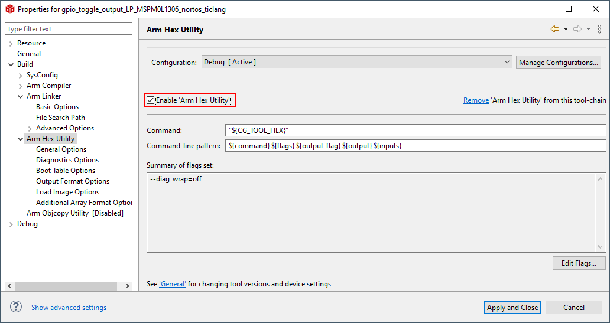
Select Output Format Options. Then select the TI-TXT hex (–ti_txt) option.
This same process can be used to generate other formats; however, some formats might require other parameters.
A common one is Intel HEX format which in addition to selecting the output format Intel hex (–intel, -i), requires to specify the memory and ROM width as parameters.
When using Intel HEX for MSPM0, select a memory and ROM width of 8 in Build → Arm Hex Utility → General Options.
Projects might include pre-built libraries which simplify development and build time; however, they don’t allow developers to modify source code easily.
An example of such libraries is the MSPM0 DriverLib which is shown below.
One option to override the library is to simply add any or all source files to the project. The MSPM0 SDK includes the empty_driverlib_src example which includes all DriverLib source by default:
The examples included in the MSPM0-SDK will commonly have linker files which create applications which are intended to run from internal Flash and will execute after reset or power cycling the device. However, in some scenarios, it can be useful to download and execute code from SRAM.
This section describes step-by-step instructions to execute some functions or complete applications from SRAM.
The following steps show how to modify a basic gpio_toggle_output example for the LP_MSPM0L1306 to run from SRAM. Similar steps apply to other examples and devices.
Open the linker .cmd file and modify it to use SRAM as shown below:
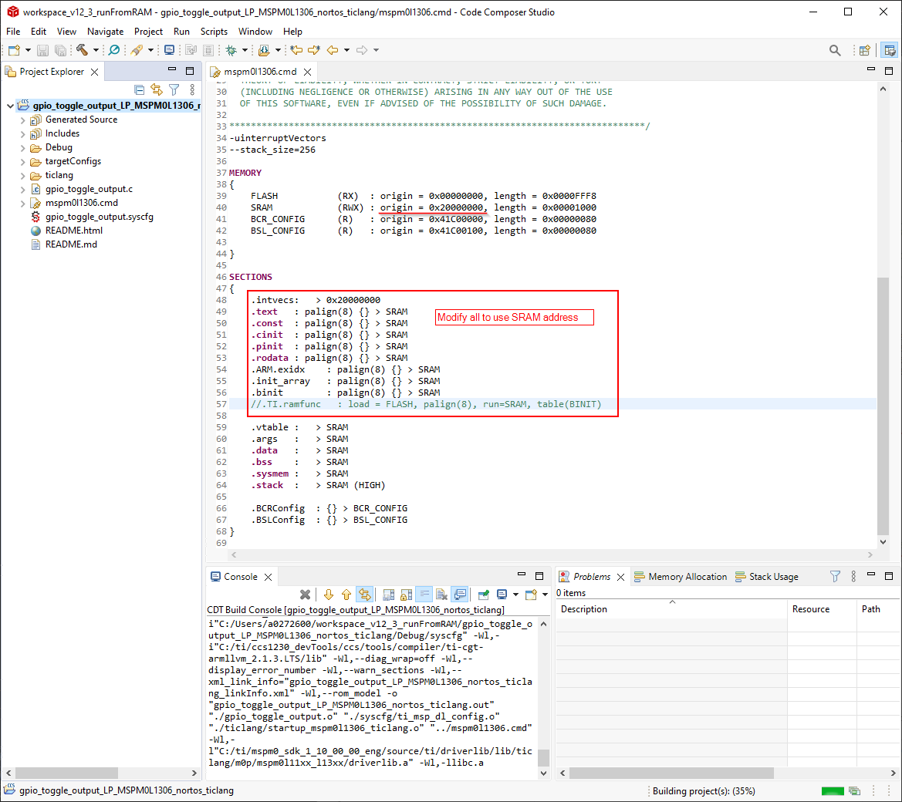
Disable the System Reset which is executed by default in CCS.
CCS includes .gel files which execute certain functions on the device. These files are included inside the CCS installation folder at <ccs>\ccs_base\emulation\gel>. The screenshot below shows the modification necessary for MSPM0L1306:
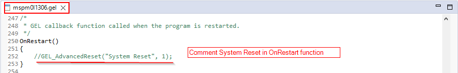
Download code and note that the device will execute from SRAM.
The following steps show how to declare a function which is executed from SRAM.
Move the function to the .TI.ramfunc section. This can be accomplished by declaring the function with the attributes __attribute__((section(".TI.ramfunc")))__attribute__((noinline)) as observed below:
The linker file should include a placement of .TI.ramfunc. Note that the linker files included in MSPM0-SDK already include this placement but it will only be applicable if any functions are placed in .TI.ramfunc.
Download code and note that the device will execute the function from SRAM.
The Flash Loader settings allow to configure some settings when programming and erasing the device.
To view and modify these settings, open the project properties and select Debug → Category:MSPM0 Flash Settings.
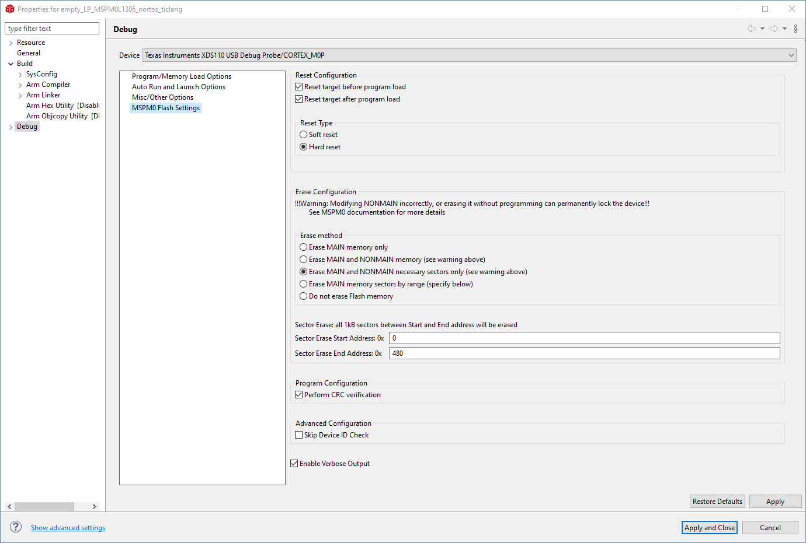
The Flash Loader has the following options:
Reset Configuration: allows to perform soft or hard reset before and after programming.
Program Configuration: enables/disables CRC verification while programming. Note that CRC validation of NONMAIN is performed when programming/erasing NONMAIN regardless of this setting.
Erase Configuration: configures the behavior when erasing memory. The options are:
Erase MAIN memory only: Only MAIN memory will be mass erased. An error will be thrown when attempting to write NONMAIN.
Erase MAIN and NONMAIN memory: Both MAIN and NONMAIN will be mass erased. See Erasing and Updating NONMAIN Memory for information about NONMAIN usage.
Erase MAIN and NONMAIN necessary sectors only: Only sectors being updated will be erased, including both MAIN and NONMAIN. Check the device datasheet for information on the size of flash sectors. See Erasing and Updating NONMAIN Memory for information about NONMAIN usage.
Erase MAIN memory sectors by range: Only sectors defined between Sector Erase Start Address and Sector Erase End Address will be erased. Check the device datasheet for information on the size of flash sectors and note that the addresses are inclusive. For example, a region from 0x0000_0100 to 0x0000_0400 on a MSPM0 device with 1kB sectors will erase sectors 0x0000_0000-0x0000_03FF and 0x0000_0400-0x0000_07FF. Note that only sectors in MAIN will be erased. An error will be thrown when attempting to write NONMAIN.
Do not erase Flash memory: Flash will not be erased. An error will be thrown when attempting to write NONMAIN without erasing.
Advanced Configuration: disables validating the device ID. Used for debugging purposes and not recommended to disable.
Enable Verbose Output: enables showing debug information while running the flash loader.
Caution: Extreme care should be taken when erasing and programming NONMAIN. If done incorrectly, the device will become locked in a permanently unrecoverable state.
NONMAIN is a dedicated region of flash memory which stores configuration data which define the behavior of the device after booting. NONMAIN should not be used for any other purpose. See the device Technical Reference Manual for more information.
TI recommends using the NONMAIN configurator available in SysConfig when configuring NONMAIN. See Using SysConfig with MSPM0 for more information.
As described in the Flash Loader section, NONMAIN is erased by selecting Erase main and NON-MAIN memory or Erase MAIN and NONMAIN necessary sectors only in the erase configuration.
Note that the Flash Loader will erase NONMAIN if any of these options are enabled; however, it will run a CRC after the programming sequence is completed, and it will attempt to restore default values if NONMAIN is corrupted.
The CCS debugger uses a limited number of on-chip debugging resources (specifically 4 hardware breakpoints and 2 hardware watchpoints). Software breakpoints in Flash are not supported on MSPM0. This means that a maximum of 4 hardware breakpoints can be set within CCS.
CCS can use a breakpoint to stop at main or halt the device at exit. These settings can be updated in the project properties by selecting Debug → Program/Memory Load Options.
If the max number of breakpoints are set, the following warning will be displayed.
Projects might include pre-built libraries which can be difficult to debug if symbols are not available. An example of such libraries is the MSPM0 DriverLib which is used by many MSPM0 SDK examples. This issue can be fixed by adding the source code to the lookup path.
In project properties, select Debug → Source Lookup Path and add the path of the source for the pre-built library.
MSPM0 allows communication to the device over SWD from a debug probe using the Debug Subsystem Mailbox (DSSM). These commands are not available in SWD security level 2, but they are optionally available in security level 0 and 1. See the device Technical Reference Manual for more information about security policies and DSSM.
The MSPM0 CCS support package includes GEL files not only to perform device initialization, but to send DSSM commands which are explained in the following sections.
3.5.1 DSSM Mass Erase, Factory Reset, Wait for Debug, and Set Reset Mode¶
DSSM Mass Erase: A DSSM mass erase is an erase of the MAIN flash regions only, which typically includes the user application. NONMAIN flash region are not affected by a mass erase. A mass erase is useful for erasing all application code and data while leaving the device configuration itself intact.
DSSM Factory Reset: A DSSM factory reset is an erase of the MAIN flash regions followed by a reset of the NONMAIN flash region to default values. Such an erase is useful for completely resetting the NONMAIN boot policies while also erasing the application code and data.
DSSM Wait for Debug: A DSSM wait for debug puts the device in a halted state where it remains at the reset handler until the user runs the application or power cycles the board. This command is useful because it allows the previously flashed application to be halted and forced to wait in the reset handler. Doing so allows for a better debugging session as it allows the user to see what occurs before hitting main().
DSSM Set Reset Mode: A DSSM set reset mode puts the device in a reset state which halts the previously flashed application from running. The command will halt the application giving back control to the device allowing for a new project to be flashed onto the device.
The SWD mass erase, factory reset, wait for debug, and set reset mode DSSM commands supersede any static write protection policies. For example, if SWD factory reset is configured to be enabled or enabled with password, the NONMAIN configuration data can be reset even if it is statically write protected.
Note: DSSM wait for debug and set reset mode vary slightly in use. The main purpose of the Wait for Debug command is to put the device inside the reset handler of the pre-existing application. Doing so provides the user with a better debug experience, as this allows the user to see what is happening before hitting main() in the current application. The main purpose of the Set Reset Command is to halt the device in a reset state (not the reset handler) where the user can flash a new project to the device, regardless of any errors in the pre-existing application. This command is not intended for debugging.
To execute a DSSM Mass Erase, DSSM Factory Reset, DSSM Wait for Debug, or DSSM Set Reset Mode follow the next steps:
On the CCS menu, select View → Target Configurations.
On the Target Configurations window, right-click the .ccxml of an active project and select Launch Selected Configuration.
On the debugger window menu, select Scripts → MSPM0xxxx_Commands (where MSPM0xxxx depends on the current MSPM0 device), and select one of the following options:
MSPM0_MailboxMassErase_Manual: A mass erase will be performed asking the user to press the reset button.
MSPM0_MailboxMassErase_Auto: A mass erase will be performed forcing reset using the XDS110 reset line.
MSPM0_MailboxFactoryReset_Manual: A factory reset will be performed asking the user to press the reset button.
MSPM0_MailboxFactoryReset_Auto: A factory reset will be performed forcing reset using the XDS110 reset line.
MSPM0_MailboxWaitForDebug_Auto: Wait for debug will be performed using the XDS110 reset line and asking the user to click on “clear reset” button.
MSPM0_MailboxSetResetMode: Set in reset will be performed using the XDS110 reset line, putting the device in reset until the next debugging session.
Note: To succesfully execute the DSSM Set Reset Mode command, the device must have a reset pin.
The following steps must be followed for a DSSM Set Reset Mode command to properly put the device in reset mode after following the steps described in section 3.5.1.
Allow the DSSM command to fully execute.
Once the command is finished, the device will now be in a reset state. Afterwards, any attempt to flash the device will throw an expected error message stating the device is in reset.
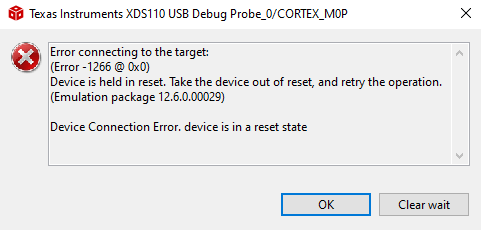
The device will exit from the reset state once Clear wait has been selected in the error window. This allows the new application to be flashed on to the device.
Note: To succesfully execute the DSSM Wait for Debug command, the device must have a reset pin.
The following steps must be for a DSSM Wait for Debug command to properly put the device in wait for debug after following the steps described in section 3.5.1.
Allow the DSSM command to fully execute.
Once the command is finished, the device will now be in a reset state. Afterwards, a connection will be automatically attempted, causing an expected error message stating the device is in reset.
The device will exit from the reset state once Clear wait has been selected in the error window
Now the device should be in the reset handler. This allows the user to access their previously downloaded code before it has reached main, or load a new application on to the device.
The device might not respond to DSSM commands in some scenarios such as when the reset line or SWD pins are used for other functions. In such conditions, it can be useful to follow the next steps:
Power off the device
Hold the reset line (NRST) low
Power up the device, while holding NRST low
Execute one of the Manual DSSM commands mentioned in previous section
The SWD interface can be configured to be disabled, enabled, or enabled with a 128-bit password by writing the BOOTCFG0 and SWDPW registers in NONMAIN. See the device Technical Reference Manual for more information about NONMAIN and SWD password.
TI recommends using the NONMAIN configurator available in SysConfig when configuring NONMAIN. See Using SysConfig with MSPM0 for more information.
The following steps can be followed to unlock a device using DSSM Password mechanism.
Assume the following password configured in NONMAIN configurator:
Attempting to program the device after configuring the password will show the following error:
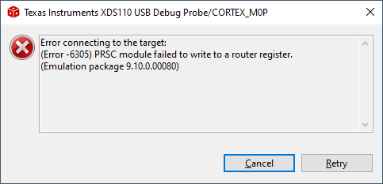
To configure the password, double-click the .ccxml inside the CCS project, go to the Advanced tab and select the MSPM0 device:
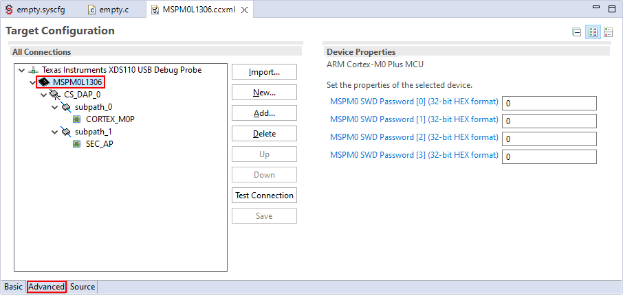
Write the password
On the CCS menu, select View → Target Configurations.
On the Target Configurations window, right-click the .ccxml of an active project and select Launch Selected Configuration.
On the debugger window menu, select Scripts → MSPM0xxxx_Commands (where MSPM0xxxx depends on the current MSPM0 device), and select MSPM0_MailboxPasswordAuthentication_Auto.
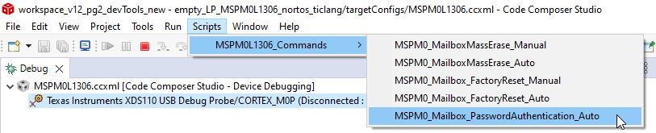
CCS should be able to connect to the device. At this point, the device can be reprogrammed but note that this action doesn’t erase NONMAIN, so the password will remain active unless NONMAIN is modified.
Note: this mechanism is expected to be automated in future versions of the CCS support package.
The MSPM0 SDK includes examples supporting both TI Arm Clang and GCC; however, TI Arm Clang is installed by default in CCS, while GCC is not.
GCC can be installed by selecting Help→Install GCC ARM Compiler Tools:
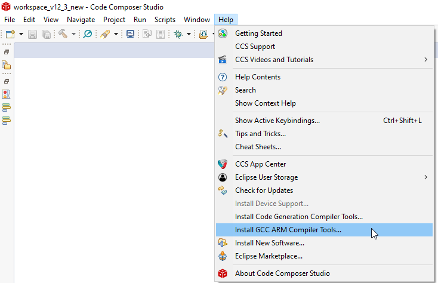
Select the version to install. CCS and the MSPM0-SDK only include and support some versions of the toolchain. Refer to release notes of your installed MSPM0-SDK version for information about the supported GCC version(s).
If the installation was successful, click on Window→Preferences, then Code Composer Studio→Build→Compilers to see a list of the compilers installed in CCS.
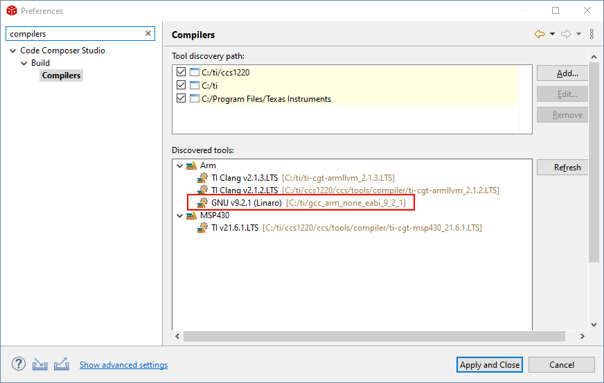
5. Known Issues and Frequently Asked Questions (FAQs)¶


 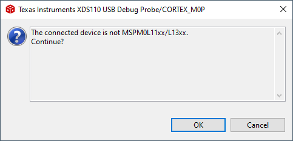
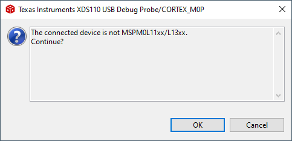